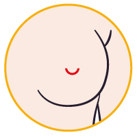

首頁 > 醫美新知 >解決你對隆乳手術的所有疑問-隆乳手術看這一篇就夠
解決你對隆乳手術的所有疑問
隆乳手術看這一篇就夠
隆乳手術真的是飛機場各位水水的救星，但在擺脫平胸前要做好多功課阿!資訊很多很困擾怎麼辦!?
不用擔心，這裡小編直接幫您整理好，隆乳手術事前準備只要看這一篇就能懂!
隆乳手術二大類型介紹
基本上隆乳手術分為二種方式，1.【自體脂肪隆乳】2.【果凍矽膠隆乳】這裡就來讓小編來詳細解說這二種的差別吧!
自體脂肪隆乳手術
自體脂肪隆乳是抽取出自己的脂肪後在回填至胸部，適合想修飾胸型、大小奶、產後胸部下垂者以及沒辦法接受填充物隆乳在自己體內的水水們。
自體脂肪隆乳的優勢在於較為自然，而且風險較低，還有不用按摩，因為是自己體內的脂肪所以不會產生排斥，而導致莢膜攣縮。
但缺點是為每次手術最多只能大1.5罩杯。

什麼是莢膜攣縮？
由於人體植入外來物後，身體的保護機制會自動形成纖維組織，也就是所謂的【莢膜】，而如果假體產生組織無法攀附或相斥反映，厚厚莢膜的就會產生，若是不頻繁按摩，就會使組織堆疊變厚，變硬，造成莢膜攣縮，變成又醜又硬的石頭，嚴重的話還會造成乳房位移。
隆乳手術切口介紹
再來就是要幫大家介紹隆乳切口!如果選擇義乳植放方式的水水們這點很重要!隆乳切口是手術過程中義乳進入體內的入口， 不管選擇哪一個切口因為要將義乳塞入所以都會產生4公分的傷口，每個不的切口位置都會會影響到手術完後疤痕所以呈現的!目前隆乳手術切口選擇有含腋下、乳暈、乳下緣以及肚臍， 這裡就讓小編來為大家分析各位置的優缺點吧!
|  | ||||
|---|---|---|---|---|
| 腋下 | 乳暈下緣 | 乳房下緣 | 肚臍 | |
| 施做難度 | ★★★ | ★ | ★ | ★★★★★ |
| 優點 | 最不傷害乳腺組織，且傷口較隱密，這是大部分人最常使用的切口位置，非常隱密腋下也有許多皺褶非常不容易被發現! | 離乳房比較近，手術過程較簡單 | 手術難度低且不會傷害乳腺 | 傷口最不容易被發現 |
| 缺點 | 腋下到乳房的距離最遠，需要仰賴精密的內視鏡儀器及熟稔的經驗輔佐。 | 可能會破壞乳腺、乳頭神經，且術後感染率較高。 | 疤痕容易發覺 | 現今主流植入物為記憶型果凍矽膠，是已成型的植入物，距離義乳放置位置有點遠，過程中都要避免對韌帶結締組織的過度破壞，已不太適合大部分的案例。 |
隆乳手術義乳植放位置介紹
切口選擇完後再來就是幫大家介紹義乳植放的位置囉! 一般放置的位置有三個胸大肌下、筋膜下、乳腺下每個位置也都各有優缺點 術前也必須跟醫師詳細討論自己的體質最適合放哪個位置!
1.胸大肌下
優點：
莢膜攣縮率、感染率低，比較適合叫瘦的水水，術後不容易被發現。
缺點：
這個位置的缺點是出血量會較多，但目前使用內視鏡隆乳已可以大幅降低出血量。
2.筋膜下
優點：
出血量少，而且術後疼痛感較低，容易擠出乳溝。
缺點：
如果是比較瘦的水水，皮下脂肪不夠的話，容易被發現義乳邊緣皺褶。
3.乳腺下
優點：
出血量較少。
缺點：
莢膜攣縮率高，且容易感染，所以大部分醫師會比較不建議放置於乳腺下。
什麼是內視鏡隆乳？
剛剛有提到內視鏡隆乳已可以大幅降低出血量!但是甚麼意思呢?小編來為您解答!
內視鏡隆乳手術是在在攝影鏡頭的輔助之下進行手術，相較於傳統隆乳手術不靠內視鏡必須由醫師的純熟經驗及手工的技術才能減少術後義乳周圍的血腫。
內視鏡隆乳補足了傳統隆乳手術的缺點!可清晰完整地看見義乳口袋內的一切狀況，因此所有的出血點都能夠確切的止血。並且整形醫師能在皮膚上畫出曲線很精準的義乳口袋，就能利用內視鏡在口袋內，將胸大肌與胸骨鋸齒狀的連結處，利用電燒的方式剝離出一個與皮膚畫線一模一樣、很平順圓滑的界限。
這樣的做法，可以讓胸大肌無論是發達或者薄弱者，術後的乳溝曲線 都能快速浮現，並且乳溝的大小（乳房內緣的間距）剛剛好。除 此之外，內視鏡隆乳手術也常能在血管還沒有機會破裂出血前，就先在清晰目視之下用電燒將血管壁凝結。只要出血量越少，就不須使用引流管，後續乳房恢復自然的速度就比較快，出血刺激造成的疼痛度也自然地下降，莢膜巒縮的機率相對大幅減少；也能提高患者術後滿意度!
3D模擬與一般術前規劃比較